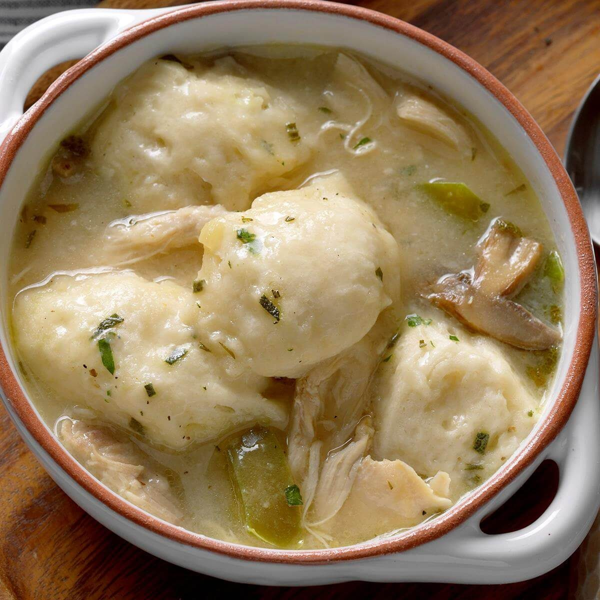

Chicken and Dumplings

Description
Chicken and dumplings is an old-fashioned comfort food that is fairly self explanatory. This recipe is for 20 servings
Ingredients
- 7 lbs cut up chicken pieces
- 4 cups chicken stock
- 2 onions, chopped
- 3 stalks celery, chopped
- 3 teaspoons salt
- 1 egg
- 1/4 cup milk
- 1 1/2 cups all-purpose flour, divided
- 1 1/2 teaspoons baking powder
- 2 tablespoons unsalted butter
- 2 tablespoons fresh parsley, chopped
- 1 cup water
- 1/2 teaspoon ground black pepper
Steps
- In a large pot place chicken pieces and add the chicken stock, onion, celery and 2 teaspoons of the salt. Put heat on medium low and simmer, partially covered, 15 to 20 minutes or until chicken is tender.
- To Prepare Dumplings: In a large mixing bowl beat together the egg and milk. Add 1 cup flour, remaining salt and baking powder and mix all together. Cut the butter into the flour mixture until the mixture is crumbly. Add 1 tablespoon of the parsley and mix. In 6 large spoonfuls, drop dumpling mixture onto the top of the simmering chicken. Cover the pot and let all simmer for 10 more minutes.
- To Make Gravy: Remove chicken and dumplings to a large serving bowl. Cover and set aside, keeping warm. Strain the stock left in the pot, pressing out any 'veggie liquid'. Return stock to pot. Combine water with remaining flour, then stir into the strained stock. Bring all to a boil, stirring constantly, to thicken. Return chicken and dumplings to pot, mixing gently. Serve with remaining parsley.